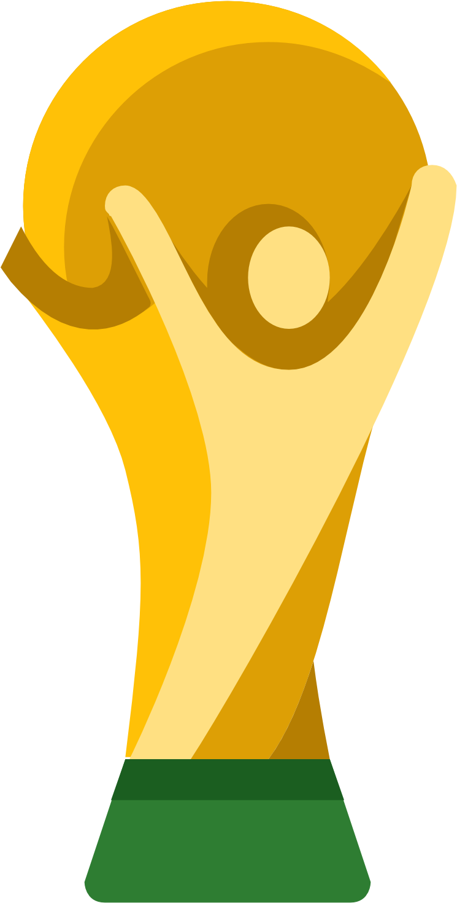
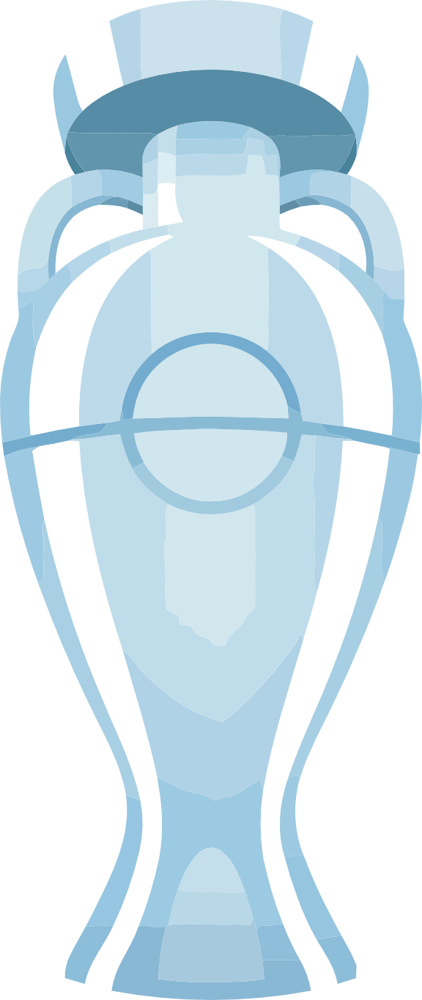
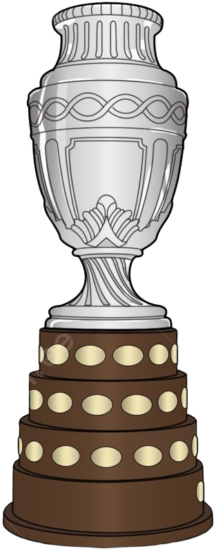

Bienvenido,
👤
Tito
Desde 2006, cada cuatro años escribimos una nueva página de esta tradición. Predicciones épicas, desaciertos legendarios y campeones inolvidables. Esta es la historia de nuestra quiniela.
En las entrañas del año 2006, cuando Sudáfrica acogía el Mundial de Fútbol, nació una criatura que perduraría en el tiempo: la Quiniela Mundial. Su génesis no fue en un laboratorio de sofisticados algoritmos, sino en la más antigua y honorable de las tecnologías: el lápiz, el papel, y —para los más audaces— un archivo Excel que funcionaba como oráculo matemático.
El arquitecto de este sistema fue Víctor Carrillo Sr., quien concibió no solo una idea, sino una filosofía: la de transformar la pasión futbolística en una competencia de predicción donde el cerebro valía más que la suerte. Pero Carrillo no se conformó con crear un juego; creó un sistema de puntos que, sorprendentemente, sigue siendo la columna vertebral de la plataforma hoy en día. Dos décadas de actualizaciones tecnológicas y la fórmula sigue intacta. Un tributo a la genialidad del pensamiento analógico.
Desde entonces, cada cuatro años la quiniela regresa. Con más participantes, más tecnología y la misma pasión de siempre. Esta página existe para que recordemos de dónde venimos — y para que los nuevos sepan en qué se están metiendo.
"Donde el azar tiembla y la fortuna se rinde, ellos alzaron la vista y descifraron el futuro.
Sus nombres no son obra de la suerte, sino la huella imborrable de quien supo leer el juego antes de que el balón rodara."



Todo empezó aquí. Italia ganó su cuarto Mundial, y nuestra quiniela dio sus primeros pasos.
Los Carrisan Pioneros: El círculo familiar cercano, que se consideraba a sí mismo como "experto" en esta naciente quiniela. Sin embargo, la vida tiene su ironía: a pesar de ser los arquitectos del sistema, se encontraban crónicamente desafiados para ganarlo.
Los Canteranos: Los amigos del hijo del creador, un grupo para el cual el fútbol no era un hobby, sino una religión. Estos jóvenes literalmente respiraban futbolística en las aulas de matemática y física. Los resultados académicos fueron desastrosos —raspaban materias con una frecuencia alarmante—, pero en la quiniela Mundial 2010, ejecutaron un juego que habría hecho sonrojar a cualquier analista deportivo.
El Ganador: Wilson Arteaga
En una entrevista que realizamos tiempo después, este visionario desveló su estrategia con la desfachatez de un genio que sabe exactamente cuán brillante es su idea:
"Puse a ganar a todos los sudamericanos y a perder a todos los asiáticos. Y siempre los mismos marcadores: 1-0. Es el resultado más lógico."
¿Descabellado? Quizá. ¿Efectivo? Rotundamente sí.
Los números lo sustentan. De los 48 partidos jugados en aquella fase de grupos, 34 terminaron en victoria (no empate ni derrota). Una tasa de acierto del 70.8%. En términos futbolísticos, esto no es predicción; es videncia aplicada.
La Economía del Juego:
La quiniela no era caridad. Cada participante invertía 4.300 Bolívares (serian 2$ al dia de hoy), lo que generaba un fondo acumulado de 64.500 Bolívares (15 participantes × 4.300 Bs).
El modelo de distribución fue elegantemente simple:
No había margen para los organizadores. Era un juego de pasión, no de lucro.

España ganó su primer Mundial con gol de Iniesta en el minuto 116, y nuestra quiniela dio su salto total adicionando la ronda eliminatoria con la regla de que el partido se juega hasta los 90min.
Mientras la mayoría de los quinielistas pensaba convencionalmente, Víctor Carrillo hizo algo audaz: creyó en España desde el principio del torneo.
España no era aún la dinastía que se convertiría. Habían ganado su 2da copa de europa despues de 44 años. No eran los favoritos. Pero Victor vio algo en el juego de toque y posesión que Xavi e Iniesta encarnaban. Vio el futuro del fútbol antes de que el futuro llegara.
Mientras otros equipos se basaban en potencia bruta, Carrillo apostó por la elegancia técnica. Apostó por Xavi. Apostó por Iniesta. Apostó por una España que apenas el mundo empezaba a creer que podía gobernar el mundo.
Víctor Carrillo ganó el mundial de Sudáfrica 2010.
Y no solo eso: en el proceso, consolidó el sistema de puntos que sigue siendo la columna vertebral de la Quiniela hoy en día. Creó una fórmula que es justa, precisa, y que recompensa tanto la visión como la consistencia.
El sistema de premios:
Cada participante invertía 20 Bolívares (serian 2$ al dia de hoy), lo que generaba un fondo acumulado de 300 Bolívares (15 participantes × 20 Bs).
El modelo de distribución se mantuvo y creo la base para futuras quinielas:
No había margen para los organizadores. Era un juego de pasión, no de lucro.

En 2012, mientras la Quiniela Mundial fermentaba en las mentes futboleras de amigos y parientes, nació Droguería Carrisan, C.A. —una entidad comercial que, sobre el papel, vendía medicinas y material medico. Pero tambien, fue la incubadora involuntaria de algo mucho más grande. Carrisan no solo proporcionaría credibilidad administrativa y un domicilio fiscal a la quiniela; se convertiría en su patrocinador oficial, gestor y evangelista.
Brasil: El Salto a lo Digital Cuando llegó el Mundial de Brasil 2014, la Quiniela Mundial experimentó su primer upgrade tecnológico significativo. No fue un salto cuántico: fue lo que podríamos llamar un "salto calculador".
Calculos precisos:Predicción manual (aún lápiz y papel, los usuarios no iban a cambiar de hábito de la noche a la mañana) → Excel automático que sumaba por partido → Resultado: velocidad, precisión, y lo más importante: confianza en los números.
Este fue el primer paso hacia lo que hoy conocemos. La máquina calculaba. El ser humano predecía.
En este torneo donde nació el primero de los grandes campeones de la era moderna: Luis Carrillo.
Luis Carrillo no era el favorito. No era el más experimentado. Pero tenía algo que el sistema de puntos, desde su creación en 2010, siempre recompensaba: precisión quirúrgica combinada con audacia calculada.
Y en ese momento, nació un mito. Los círculos de la Quiniela comenzaron a referirse a él como "El Más Grande" — no por arrogancia, sino por reconocimiento. Había ganado en el primer mundial de la era corporativa. Había demostrado que la precisión era posible. Que la visión era un arte que podía dominarse.

Rusia 2018 marcó el salto comunicacional: grupos de WhatsApp, memes en tiempo real y compartir la tabla de posiciones. Francia se coronó campeón con Mbappé como figura emergente. La quiniela alcanzó 34 participantes — casi el doble que cuatro años antes.
Creacion de la tabla de ranking en tiempo real: Droguería Carrisan implementó una innovación que parecería insignificante hoy y que fue, en retrospectiva, una revelación: comenzaron a publicar la tabla de ranking en un grupo de WhatsApp después de cada partido.
El Fenómeno del WhatsApp Real-Time: Imagina esto, estás en el sofá, viendo a Bélgica jugar contra Japón en la fase de grupos. La mayoría del mundo thinks: "Bueno, Bélgica debería ganar." Tú, con tu quiniela en la mano, quizá pensaste diferente. El partido termina. En segundos —literalmente segundos—, el screenshot de la tabla de ranking llega al grupo.
Jorge Molina: El Visionario
Molina ejecutó lo que podría llamarse la "estrategia de la geometría futbolera". Apostó a Francia como ganadora final, pero donde Molina divergía del ortodoxo era en sus predicciones secundarias. Mientras otros descartaban a Bélgica y Croacia como curiosidades estadísticas, Molina veía algo: equilibrio táctico. Bélgica tenía una generación dorada.
Croacia llegó a la final. Bélgica alcanzó el tercer lugar. Y en el camino, Molina acumuló puntos con una precisión quirúrgica.
34 Participantes: El Récord que Cambió Todo pasamos de "es un club exclusivo de amigos" a "esto es un fenómeno". la recoleta total llego hacer de 6120 Bs S. (102$) donde cada participante pago su inscripcion de 180 Bs S. (3$) para distribuirse en el mismo sistema de premios de las anteriores quinielas (70%, 20% y 10%).

El primer Mundial en fechas navideñas donde para los puristas del fútbol, Qatar 2022 fue el mejor mundial de la historia . No por los estadios. No por la organización. Por el hecho de que el final perfecto ocurrió: el mejor jugador de su generación, en su momento más vulnerable pero también más sabio, levantando la copa que siempre merecería y lo cual lo corono el mejor de todos los tiempos.
El Fin de una Era: Adiós al Lápiz y el Papel Con 34 participantes en 2018, la recolección manual se había convertido en un cuello de botella logístico. Alguien tenía que ir recogiendo predicciones de gente dispersa por toda la ciudad. Alguien tenía que digitarlas en Excel. Alguien tenía que verificar que no faltara nadie. Era caótico, ineficiente, y propenso a errores humanos.
La quiniela entro en su era digital: Un enlace. Un formulario. Predicciones que se recopilaban automáticamente en una hoja de cálculo lista para ser procesada. Cada participante podía llenar sus pronósticos desde su teléfono, en cualquier momento, antes del deadline. No necesitaban papeletas. No necesitaban coordinarse para una "entrega oficial". Solo abrían el formulario y llenaban.
Tito: El Administrador que Predijo el Destino Era alguien que entendía el torneo, estudiaba a los equipos, y hacía predicciones con el mismo rigor que cualquier otro participante. La diferencia era que, además de jugar, también mantenía vivo el sistema.
Tito hizo una apuesta que parecía osada, eligió a Argentina como campeona mundial.
En un torneo donde Francia era la favorita defensora, donde Brasil parecía el predestinado, donde Bélgica aún tenía su generación dorada... Tito apostó por Argentina. Por Messi. Por el futbol.
La Batalla Final: El campeon lo decide todo
La batalla fue cerrada. Muy cerrada. Múltiples participantes llegaron a la final con puntuaciones similares, viendo el partido decisivo entre Argentina y Francia como la oportunidad de romper el empate.
Pero aquí está donde el sistema de Tito brilla: Bono del Campeon.
En la Quiniela Mundial, acertar el campeón final no es solo acumular puntos. Hay un bono del campeon —un incentivo extra—, una recompensa por vision, por haber creído en algo que el mercado no creía.
Cuando Argentina levantó la copa, Tito no solo acertó su predicción base. También se llevó bono del campeon que viene con elegir correctamente al campeón mundial. Ese bono, ese singular bono, fue la diferencia entre ser campeón y ser casi campeón.
La Simetría del Destino Hay algo poético en cómo los eventos se alinearon:

Dos Mundos Colisionan: En 2024, el calendario futbolístico conspiró para crear algo sin precedentes: Copa América y Eurocopa en el mismo verano. Los administradores de la Quiniela Mundial enfrentaron una decisión: ¿ignorar una de las competiciones? ¿Obligar a los participantes a elegir? ¿O hacer algo que nunca habían hecho?
Crear dos Quinielas simultáneamente:
un formato experimental, ambicioso, y potencialmente caótico que requeriría algo que la Quiniela Mundial nunca había necesitado: gestión paralela de dos torneos en tiempo real. Así nació la Quiniela EuroAmérica 2024
La Infraestructura Digital: Para manejar dos quinielas simultáneamente, el sistema digital necesitaba evolucionar una vez más. Para 2024, la solución fue más sofisticada: un Canal de WhatsApp dedicado
Fútbol Sin Descanso: La Experiencia Perfecta
Aquí está lo que hizo especial a EuroAmérica 2024: durante dos semanas, había fútbol todo el día. Era una experiencia inmersiva de fútbol. Y la Quiniela, por primera vez, permitía apuntar a ambos torneos simultáneamente sin conflictos.
Dos bases de datos de predicciones. Dos sistemas de cálculo de puntos. Dos tablas de ranking. Dos campeones coronados el mismo año.
Vicente Olivares: La joven promesa En la rama de Copa América, la batalla fue cerrada desde el inicio. Vicente Olivares era una promesa emergente en las quinielas. No tenía el historial de los veteranos, pero tenía algo que no se puede enseñar: instinto
La batalla entre Olivares y Caruso Su competidor más cercano era Nino Caruso, un quinielista experimentado que jugaba con la precisión de quien ha visto múltiples mundiales pasar.
1 punto lo define todo: La final entre Argentina y Colombia prometía mover el tablero. Cuando llegó el desenlace, Olivares estaba apenas un solo punto adelante de Caruso y se coronó campeón de la Quiniela Copa América 2024
La Eurocopa: La Batalla de Gigantes Si la Copa América fue David vs Goliat (Olivares vs Caruso), la Eurocopa fue Goliat vs Goliat. José era un nombre respetado en los círculos de la Quiniela Mundial Era un fuerte contendiente de las ediciones anteriores. No había ganado aún, pero había llegado cerca. Sabía cómo jugar. Sabía cómo leer el fútbol europeo.
Pero su camino hacia el campeonato en 2024 fue a través de una batalla contra alguien que muchos consideraban el más grande competidor que la quiniela había visto jamás: Luis Carrillo
No tenía solo experiencia; tenía un legado, habia ganado en el mundial Brasil 2014 y a lo largo de varias ediciones, había estado en los puestos superiores, había estado cerca, había demostrado una consistencia que pocos podían igualar. En los círculos de la Quiniela, se le llamaba (según la narrativa popular, claro está) "El Más Grande"
Cuando la Eurocopa llegó a su final y los puntos se cerraron, José había ganado. No fue un triunfo abrumador. Fue una batalla ganada, una guerra de predicciones donde el campeón emergió apenas un paso adelante del segundo.
Cuando la Eurocopa llegó a su final y los puntos se cerraron, José había ganado junto con españa que fue su campeon desde un principio. No fue un triunfo abrumador. Fue una batalla ganada, una guerra de predicciones donde el campeón emergió apenas un paso adelante del segundo.
Primera Quiniela que no hubo premio monetario ni cobro de inscripcion o registro, por la creacion espontanea de esta quiniela.
El Mundial se expande a 48 selecciones y tres países anfitriones. Nosotros también nos expandimos: esta vez con una plataforma web completa, sistema de puntos automático, ranking en vivo, ligas privadas y todo lo que soñamos hace 20 años. El primer Mundial donde puedes predecir desde tu celular sin mandar capturas por WhatsApp. Bienvenido al futuro de nuestra tradición.
20 años después de que Víctor Carrillo Sr. escribiera la formula con lápiz y papel en 2006, la Quiniela Mundial finalmente consiguió su hogar definitivo: quinielacarrisan.com.ve.
Una Plataforma, Un Ecosistema Completo quinielacarrisan.com.ve no es solo un formulario de predicciones. Es un mundo.
Abre el sitio y encuentras:
No sabemos quién será el campeón en el campo Pero sabemos que la Quiniela lo coronará correctamente. Que lo celebrará adecuadamente. Que su nombre estará aquí, para siempre, en el Salón de la Fama.
¿Será el tuyo?

Llevamos 20 años escribiendo esta historia juntos. 5 mundiales, 2 Copas Continentales, cientos de participantes y miles de predicciones. Ahora es tu turno de dejar tu marca en la quinta edición de esta tradición.
📝 Ver tu quiniela →Droguería Carrisan, C.A.
Archivo histórico · 2006 – 2026